原文连接:https://www.cnblogs.com/badaoliumangqizhi/p/11749848.html
场景
喜马拉雅电台：
找到一步小说音频，这里以下面为例
https://www.ximalaya.com/youshengshu/16411402/
博客：
https://blog.csdn.net/badao_liumang_qizhi
关注公众号
霸道的程序猿
获取编程相关电子书、教程推送与免费下载。
实现
找到下载地址
使用谷歌浏览器打开上面网址，按F12打开调试，点击播放按钮后，然后找到Network下的Media下的Headers下的RequestURL,然后选中在新窗口中打开
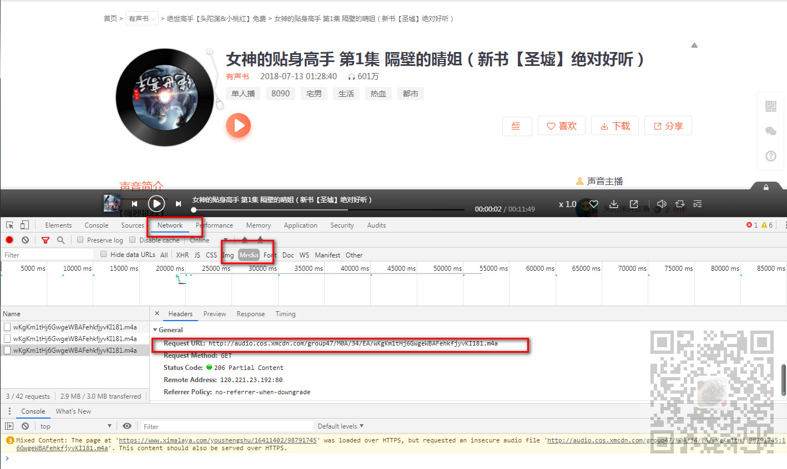
打开之后就可以点击三个点出来之后的下载按钮，便可以下载
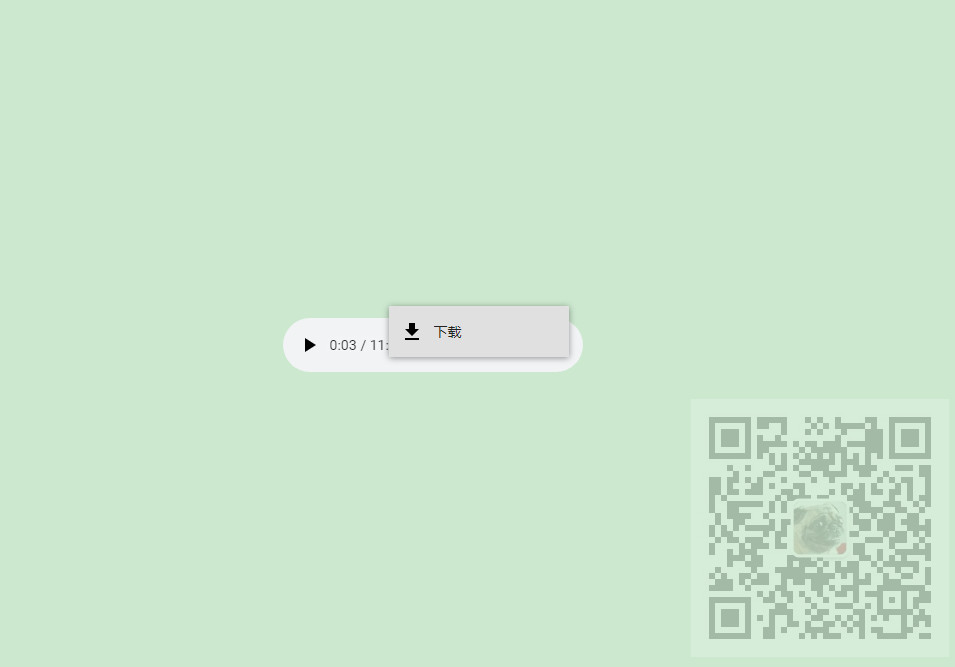
使用代码下载
打开PyCharm，新建一个Python项目
导入requests库，然后为了防止其反扒机制，找到浏览器上Headers下的Requests Headers下的User-Agent,复制出来。
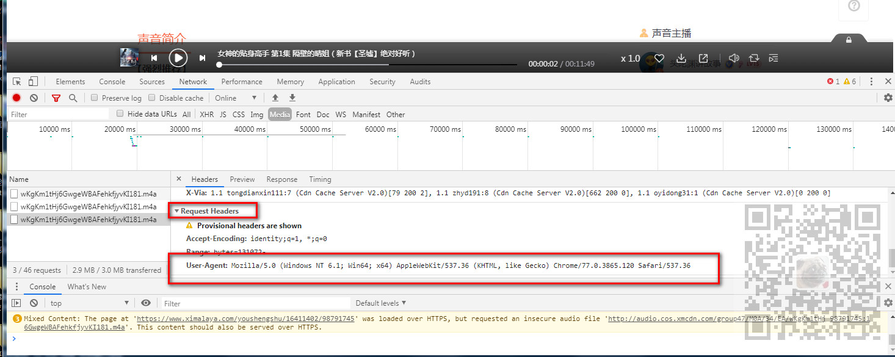
#能发送http请求的库
import requests
headers = {
'User-Agent': 'Mozilla/5.0 (Windows NT 6.1; Win64; x64) AppleWebKit/537.36 (KHTML, like Gecko) Chrome/77.0.3865.120 Safari/537.36'
}
media_url = 'http://audio.cos.xmcdn.com/group47/M0A/34/EA/wKgKm1tHj6GwgeWBAFehkfjyvKI181.m4a' response = requests.get(media_url,headers = headers); with open('badao.mp4',mode='wb') as f: f.write(response.content)
下载成功之后
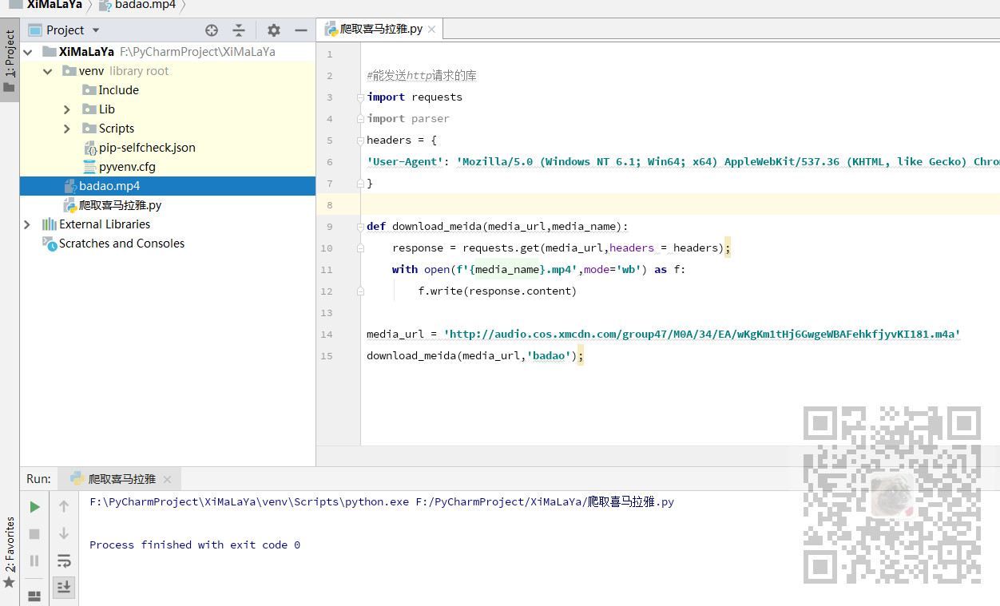
下载地址获取
上面只是获取一个音频的下载地址，怎样获取每一集的下载地址
还是刚才的调试页面，我们点击放大镜样的搜索按钮，出来搜索框之后，输入刚才下载地址的文件名
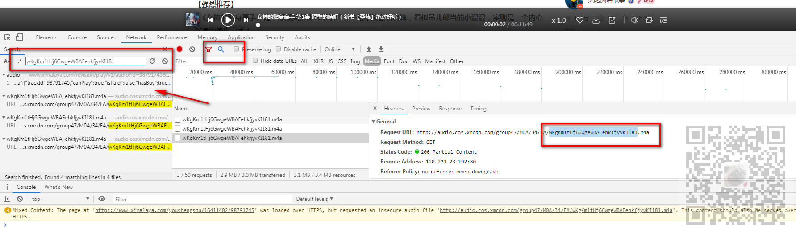
点击第一个返回json数据的接口url,找到其Headers下的RequestURL。
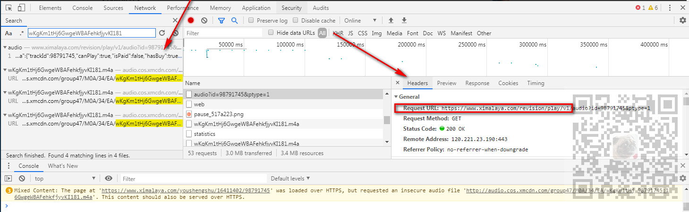
然后在新窗口打开
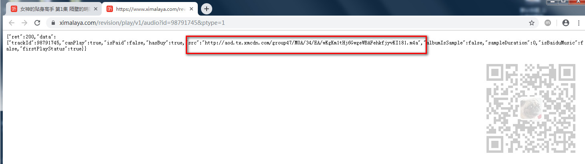
可以看到是通过这个API返回的Json数据中的下载地址。
那么这个API需要传递什么参数。通过其Headers底部的请求参数可以看到需要一个id参数和pytype参数。
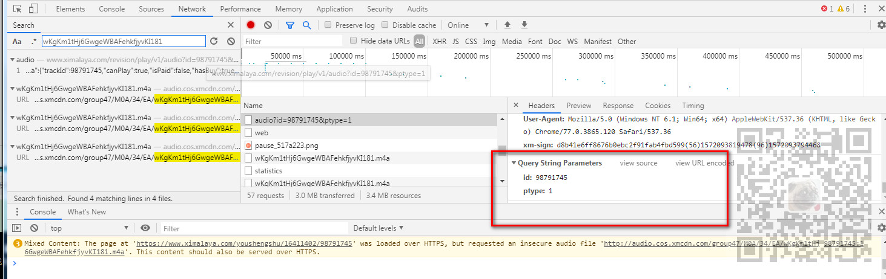
通过对比每一集的接口的请求参数得知，pytype是固定的，id是每一集对应的链接中的id相对应的。
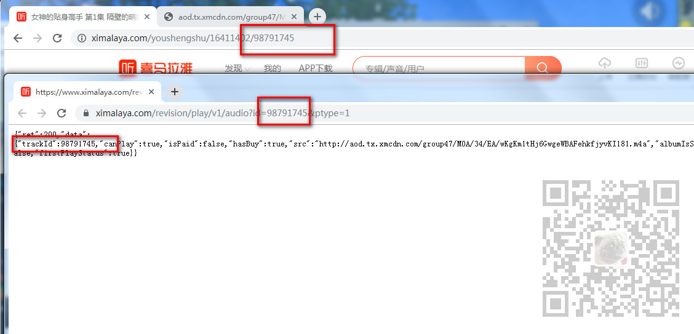
所以要是循环下载多集的话，需要在目录页面获取超链接的href属性中对应的id。

这里我们定义一个请求下载地址json数据的方法
defmedia_api(track_id):
api_url=f'https://www.ximalaya.com/revision/play/v1/audio?id={track_id}&ptype=1';
response = requests.get(api_url,headers = headers)
print(response.json())
media_api(98791745)
运行下打印json数据
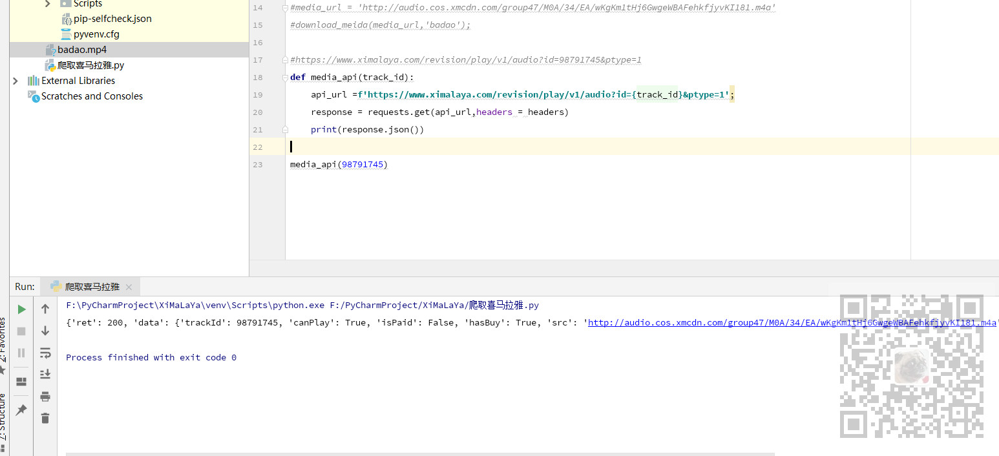
提取下载地址
那么就需要根据传递的id参数通过这个接口返回json数据，并从json数据中提取src对应的url数据
def media_api(track_id):
api_url=f'https://www.ximalaya.com/revision/play/v1/audio?id={track_id}&ptype=1';
response = requests.get(api_url,headers = headers)
#print(response.json())
#json返回字典类型 提取使用[]
data_json = response.json()
src = data_json['data']['src']
return src
media_api(98791745)
这样就能根据id获取每一集的下载地址，然后再将下载地址传递给上面第一步下载的方法中进行下载即可。
接下来就是怎样获取每一集的id。
parsel解析网页获取id
首先需要导入parsel模块
import parsel
如果没有安装则需要安装
pip install parsel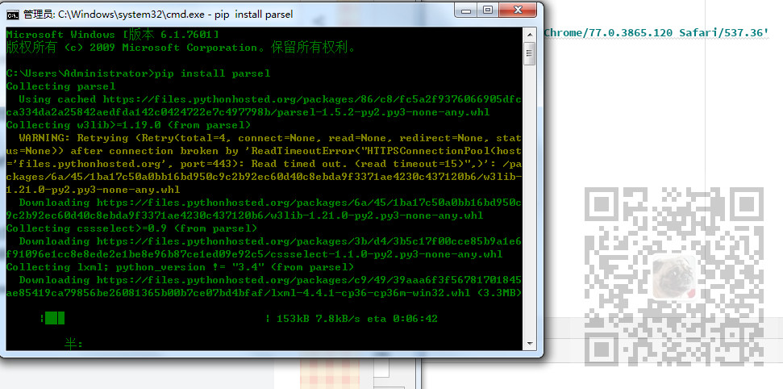
我们来到其目录页
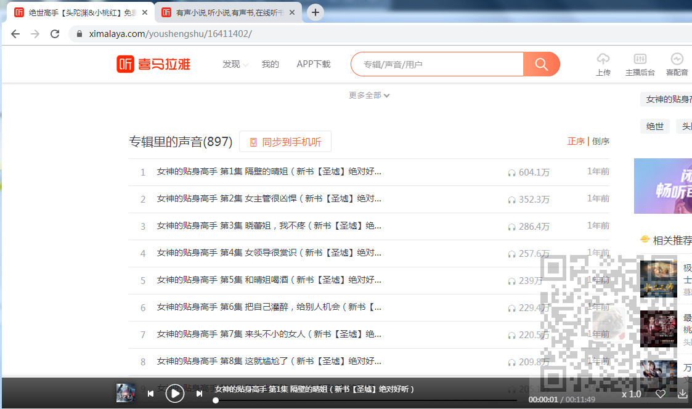
在Elemnts下可以看到每一集是一个a标签，我们获取a标签的href属性中的最后面的id。
我们再定义一个方法，此方法能根据页面的url获取当前页的所有集的id。
def get_total_page(page_url):
#请求页面
response = requests.get(page_url,headers = headers)
print(response.text)
#获取页面html的内容
sel = parsel.Selector(response.text)
print(sel)
#通过css选择器找到a标签 .sound-list代表 class属性为sound-list 然后下面的ul 下的li 下的a
sound_list = sel.css('.sound-list ul li a')
print(sound_list)
#只有前30个是页面链接 截取前30个
for sound in sound_list[:30]:
#extract_first()将对象中的文字提取出来
#获取a标签的href属性的内容
media_url = sound.css('a::attr(href)').extract_first()
#/youshengshu/16411402/98791745 --只去最后面的id
media_url = media_url.split('/')[-1]
# 获取a标签的title属性的内容
media_name = sound.css('a::attr(title)').extract_first()
#用yield将整个循环的内容返回
yield media_url,media_name
下载一页的音频
我们在main方法中调用获取当前页所有的集的id和名字，然后循环将拿到的id去请求api获取下载的地址，然后将下载地址传递给下载的方法去下载
if __name__ == '__main__':
meidas = get_total_page('https://www.ximalaya.com/youshengshu/16411402/')
for media_id,media_name in meidas:
#print(media_url, media_name)
media_url = media_api(media_id)
download_meida(media_url, media_name)
运行程序将一页下载完
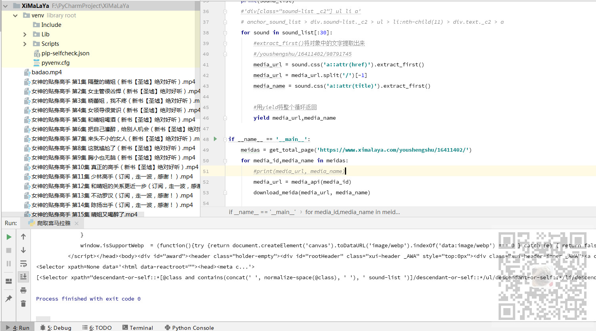
下载所有页
我们点击第二页看到url中追加了一个p2，依次类推，p+相应的页数。
这样就可以将页面url改造成传参的
if __name__ == '__main__':
#循环页数下载 range代表下载的页数范围
for page in range(2,3):
meidas = get_total_page(f'https://www.ximalaya.com/youshengshu/16411402/p{page}')
for media_id,media_name in meidas:
#print(media_url, media_name)
media_url = media_api(media_id)
download_meida(media_url, media_name)那么在range中就可以输入要下载的页数的范围。
如果输入(1,31)就是下载所有的30页，这里只下载第二页，所以range是(2,3)
代码下载
关注公众号：
霸道的程序猿
回复：
爬取喜马拉雅